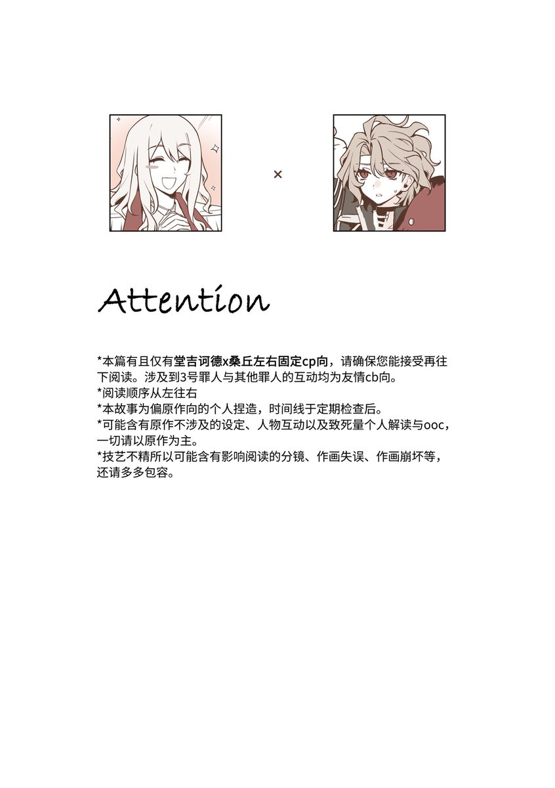
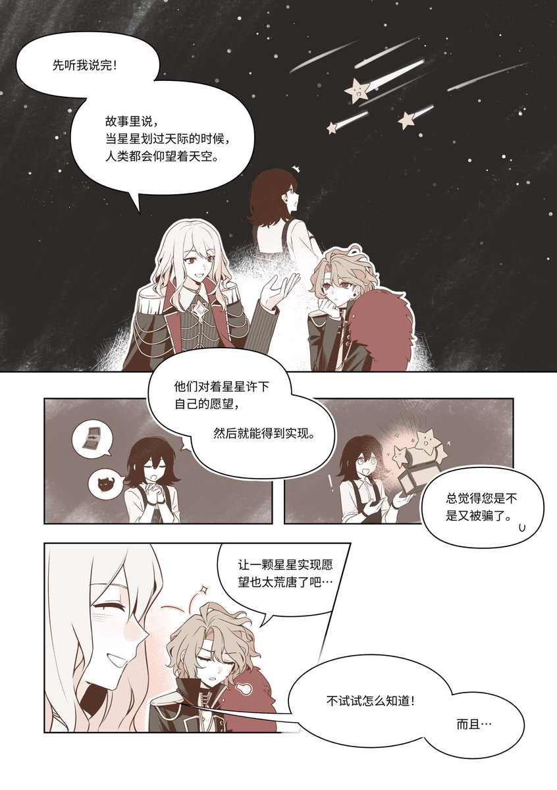

🥛💤
@Kumamushi2021
@kamisiro_sora 回过神来的那一部分画面是黑白的啊😢


美攻厨
@kamisiro_sora
发个新刊的试阅/本宣。大概是会参7月上海月o和cpgz09（如果有的话）的本本，正文全本共46p，注意事项全都在p2还请确保能接受再开始阅读。
试阅仅供参考，实物可能会有偏差，包括但不限于大幅度修改颜色、分镜与台词等。
（1/3） https://t.co/UUxT9qZA0i